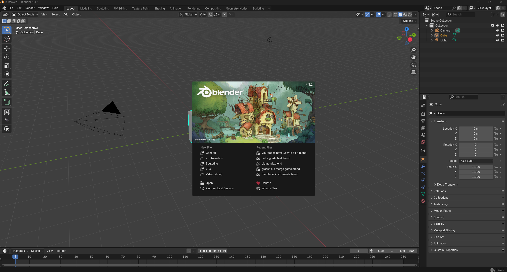

Understanding the Blender Interface: A Beginner's Guided Tour
Blender's interface looks complicated at first, but it's designed for efficiency once you get the hang of it. This guide breaks down the main parts, so you know where to find what you need to start creating in 3D.
1. First Things First: The Splash Screen
When Blender opens, the Splash Screen pops up. It shows the Blender version, quick links to start new projects (like General, 2D Animation, Sculpting), and lists your recent files. You'll also find links to official Blender resources here, which can be handy.
To get to the main interface, just click anywhere outside this splash screen. For most 3D work, you'll be heading into the default "General" setup.
2. Switching Tasks: Workspaces
Blender uses Workspaces to organize its layout for different jobs. Think of them as pre-set screen arrangements. You'll see tabs for these along the top: "Layout," "Modeling," "Sculpting," "UV Editing," "Texture Paint," "Shading," "Animation," and more.
Click a tab, and the panels change to suit that task. "Modeling" gives you geometry tools; "Shading" focuses on materials. We'll mostly stick to the default "Layout" workspace to begin with.
3. Your 3D Window: The 3D Viewport
The biggest panel is usually the 3D Viewport. This is where you'll see and work with your 3D objects. It's where most of the action happens.
Getting Around in the Viewport
Moving around in 3D is essential. The main ways (with default mouse settings):
- Orbit (rotate view): Hold Middle Mouse Button (MMB) and drag.
- Pan (slide view): Hold Shift + MMB and drag.
- Zoom: Mouse Wheel up/down. Or Ctrl + MMB and drag.
- Focus on Selected: Numpad Period (.) zooms in on whatever you've selected. Very useful.
There's also a navigation gizmo (those colored axes) in the top-right. You can click and drag it to orbit, or click an axis (X, Y, Z) for a straight-on view like Front or Top.
Viewport Header: Key Controls
The header at the top of the 3D Viewport has a lot packed into it. The most important bits for now:
- Interaction Mode: This dropdown (Object Mode, Edit Mode, Sculpt Mode, etc.) changes what you can do and what tools are available. You'll switch this constantly.
- Add Menu (Shift+A): How you add new objects, lights, or cameras into your scene.
- Viewport Shading: These buttons change how your scene looks in the viewport:
- Wireframe: Shows object edges. Good for seeing structure.
- Solid: The default gray shaded view. Great for modeling.
- Material Preview: A quick preview of your materials (uses Eevee).
- Rendered: A live preview using your chosen render engine (Eevee or Cycles). This can be slow depending on your scene.
Other menus like View, Select, and Object offer more specific actions, which you'll discover as you need them. Overlays and Gizmos control what extra guides you see on screen.
Toolbar (T-Panel, on the left)
The vertical bar of icons on the left is the Toolbar. Press 'T' to show or hide it. It holds tools for the current Interaction Mode. In Object Mode, you get Move, Rotate, Scale. In Edit Mode, tools like Extrude and Bevel appear. Selecting a tool here often shows more options in the header or a small "Adjust Last Operation" panel that pops up at the bottom-left after you use a tool.
Sidebar (N-Panel, on the right)
The Sidebar on the right (press 'N' to toggle) has tabs for details. The most used are:
- Item: Shows Location, Rotation, Scale of the selected object. You'll use this a lot for precise adjustments.
- Tool: Options for the active tool.
- View: Settings for the viewport camera, like focal length.
- Many add-ons also stick their panels here.
4. Keeping Track: The Outliner
The Outliner (usually top-right) lists everything in your scene: objects, cameras, lights, and importantly, Collections. Collections are like folders for organizing your scene. For complex projects, good Outliner hygiene is a lifesaver.
You can select things here, rename them (double-click), drag them into collections, and toggle their visibility (eye icon), selectability (arrow icon), or if they show up in renders (camera icon).
5. All The Details: The Properties Editor
Below the Outliner sits the Properties Editor. This is a big one. It's where you tweak settings for almost everything, and its contents change depending on what you've selected. It's organized with vertical tabs (icons on its left edge).
For beginners, the most crucial tabs you'll live in are:
- Render Properties (Camera Icon): Choose your render engine (Eevee for realtime, Cycles for path-tracing), set output size, quality (sampling), etc.
- Output Properties (Printer Icon): Where your final image/animation saves, file format (PNG, MP4).
- Object Properties (Orange Square Icon): Basic transform info, display options for the selected object.
- Modifier Properties (Wrench Icon): This is huge. Add non-destructive effects like Subdivision Surface (to smooth things), Mirror, Array, Bevel. You'll use modifiers constantly.
- Material Properties (Sphere with Checkers Icon): Define how your object looks – its color, roughness, if it's metallic, etc. A lot of your artistic work happens here.
- Object Data Properties (Green Triangle for Meshes): Data specific to the object type, like vertex groups for meshes.
There are other tabs for physics, particles, world settings, and more, which you'll explore as you tackle more specific projects. Don't feel you need to know them all at once.
6. Making it Move: The Timeline
The Timeline at the bottom is for basic animation. You set start/end frames, play your animation, and see keyframes. If you're just starting with modeling, you might not touch this much, but it's good to know it's there.
For more detailed animation, you can switch this bottom panel to the Dope Sheet or Graph Editor, but for now, the Timeline is enough to be aware of.
7. Your Own Layout: Customizing Editors
Blender is super flexible. Every panel is an Editor, and you can change any panel to show any editor type. Look for a small dropdown icon in the top-left corner of any panel – that lets you switch. You can also split panels by dragging from their corners (your cursor will change to a crosshair). This lets you set up Blender exactly how you like for a specific task, and even save these as new Workspaces.
Personally, I often split my 3D Viewport to have multiple camera angles or a reference image open. You'll find your own preferred setups over time.
8. The Main Menu: Top Bar
The very top bar has the main application menus: File (save, open, import, export), Edit (undo, preferences), Render (render image/animation), Window, and Help. Your Workspace tabs are also up here. It's standard stuff, but important for managing files and accessing global settings like Preferences.
9. Quick Info: The Status Bar
The thin bar at the very bottom is the Status Bar. It's surprisingly useful. It shows mouse button shortcuts for the current tool, basic scene stats (like how many vertices or faces you have), and the Blender version. Keep an eye on it for quick operational hints.
Okay, What Now?
You've now seen the main parts of the Blender interface. It's a lot, but focus on the 3D Viewport, Outliner, and Properties Editor (especially Modifiers and Materials) to start. The best way to learn is by actually using it.
A good next step? Try modeling something simple, like a coffee cup or a basic table. You’ll quickly start using most of the interface elements we covered. Don't be afraid to click around and explore menus – that's how you build familiarity.